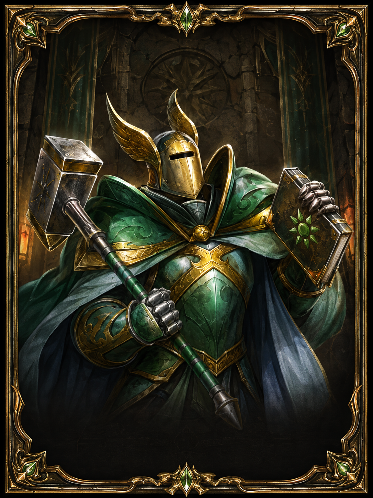

Emanasyon
İyilik itibarını yükseltmek için kullanılan ana değerdir.

İyilik Yapanlar itibarı, Emanasyon kullanılarak kasılan ve Kötülük Yapanlar itibarı ile ters mantıkta ilerleyen önemli itibar gruplarından biridir.
İyilik Yapanlar itibarı için temel kaynak Emanasyon değeridir.
İyilik itibarını yükseltmek için kullanılan ana değerdir.

Emanasyon harcanarak itibar ilerletmek için kullanılan işlem mantığıdır.
Bazı kaynaklar Emanasyon değerine çevrilebilir.
| Kaynak | Adet | Kazanılan Emanasyon |
|---|---|---|
| Öfkeli Göz | 1 | 30 |
| Öfkeli Göz | 10 | 310 |
| Ölü Savaşçının Kafatası | 1 | 2 |
| Ölü Savaşçının Kafatası | 10 | 21 |
| Ölü Savaşçının Kafatası | 50 | 107 |
Her işlem +10 şan verir.
| Şan Aralığı | 1 İşlem İçin Emanasyon | Kazanılan Şan |
|---|---|---|
| 0 - 1000 | 70 | +10 |
| 1000 - 2000 | 100 | +10 |
| 2000 - 3000 | 130 | +10 |
0'dan 3000 şana kadar gereken toplam Emanasyon hesabı.
0 - 500 şan
3500 Emanasyon500 - 1000 şan
3500 Emanasyon1000 - 2000 şan
10000 Emanasyon2000 - 3000 şan
13000 EmanasyonSaygı sonrası özel aşama
Ek görev ve kaynak isterMevcut şan ve hedef şan girerek gereken Emanasyon miktarını hesapla.
Elindeki Öfkeli Göz ve Kafatası miktarına göre toplam Emanasyon değerini hesapla.